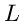
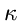

| Visualizing Linear Series |
|

| Visualize a linear series via the resulting map |
| To see it, both the series and its ramification points must be real. |
| Definition. A eal linear series  of dimension (map ) | |
|
of degree |
|
Example ( |
| Ramification |  |
||
| flex | |||
| cusp  | |||
| planar |